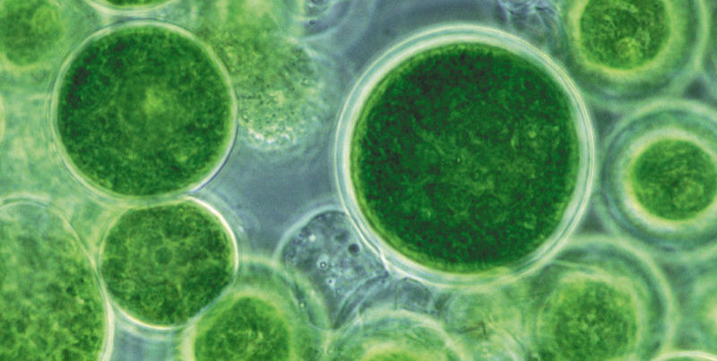

This week, we sat down with the fantastic David Kim from CyanoCapture, a team using genetically modified (GM) cyanobacteria to drawdown CO2. In this edited conversation, David discusses his inspiration for creating CyanoCapture, his perspectives on the microalgal industry, and the team's innovative technology.
I had the idea while studying respiratory systems in the human body. After noticing cyanobacteria performing a somewhat similar CO2 exchange process, I started to visualise the planet as one big body fitted with lungs and CO2 emission sites. I then sought to create solutions to mitigate CO2 at these emission sites, and cyanobacteria stood out as the best organism for the job.
I founded a team in January 2021 after pitching the idea at a biotech hackathon. Our plan from the start was to use the best GM technology we have at the University of Oxford, and apply it to the best known strain of cyanobacteria. We got funding for this in June 2021 before going on to win the student X PRIZE carbon award in November. We've been using that money to produce and patent our own commercial GM strain which now shows a 3x improvement in its ability to capture CO2.
We are using our own proprietary photobioreactor design which resembles a flat panel system crossed with a raceway pond. As flue gases are pumped directly into our PBRs from industry facilities, the photobioreactors are heated to the optimum temperature using a clever negative feedback mechanism. What's more, we also use a scalable modular design, which we believe will help us meet the needs of our customers.

We haven't heard much from this space since the microalgal market crashed 10 years ago. Despite this, I think we'll see a resurgence thanks to the market price for carbon tripling in 2020/2021. This suddenly meant that carbon fixation technologies like microalgae cultivation became profitable.
It will be interesting to note which strain of microalgae will be most popular going forward. In the past, people primarily worked with spirulina to create products like nutraceuticals, pigments, dyes, and health foods. These were the top tier, high market products. Nowadays, companies trying to capture maximum carbon like CyanoCapture will likely turn to other strains like Synechococcus. I think this will lead to a divergence in the market over the next five years.
Absolutely. We are currently looking to enter B2B partnerships for this purpose. In the last few years, plenty of companies have emerged with the capability to permanently store biomass as concrete, cement, and other building materials. We would like to partner with such teams and supply them with our biomass and free fatty acids.

It can be a challenge to explain how direct carbon capture (our competitor) is a non-viable technology due to its high energy costs. All the energy involved in heating their absorbent, compressing pressurised CO2, and transporting the product over vast distances is very intensive. As a result, it's barely a net negative process.
In comparison, microalgae cultivation is significantly less intensive. This means it's better for the environment, and the operational costs are almost tenfold lower than direct air capture. Despite these clear benefits, the challenge lies in the fact we haven't proven our technology at scale. As a result, it requires a little more effort at this point to persuade people to believe in algae-based carbon solutions again, but we'll get there!
We have a few things in the pipeline. Firstly, we've already proven enough in the lab to start scaling out a pilot project. Therefore, we aim to do a 500 - 1000 t/yr CO2 capture installation in 2023. That's going to demonstrate to the world that our technology genuinely works. Secondly, we are continuously improving our strain and photobioreactor design.
In terms of advice, it's important to never lose sight of the mission. In order to get through those tough days and obstacles, taking note of that overall mission will often guide you through. At CyanoCapture, the mission is clear. This start-up could potentially change the course of the century and, in my opinion, there's nothing better to do for the world right now than help industries decarbonize.
When it comes to resources, I love this book called "Factfulness" by Hans Rosling. It may have nothing to do with climate change or business, but it's about keeping a rational perspective on matters. In addition, it has also made me more optimistic about the future. The key message is that the world is much better than you think, and there is cause to believe humanity is making progress in the right direction.
Interviewer: Peter Green